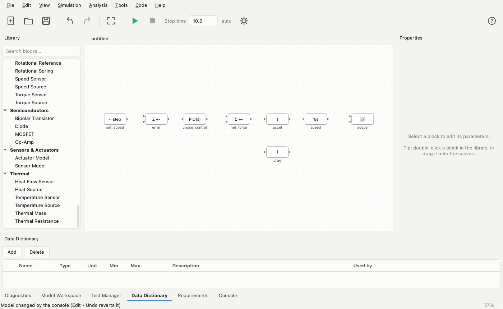
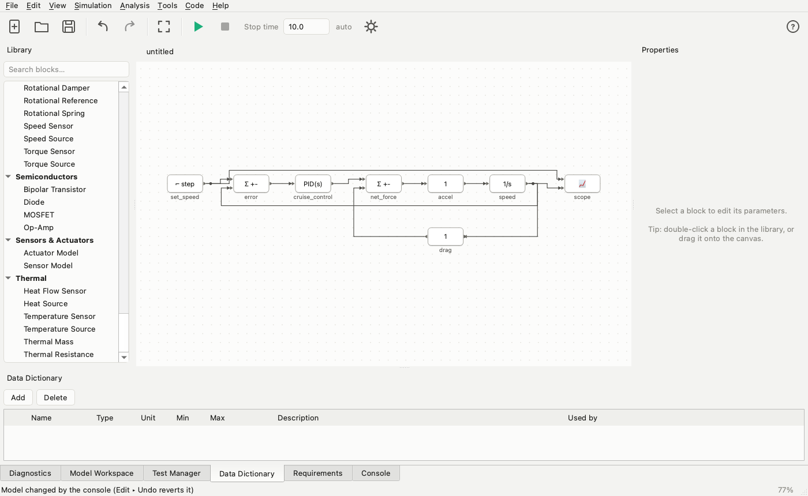
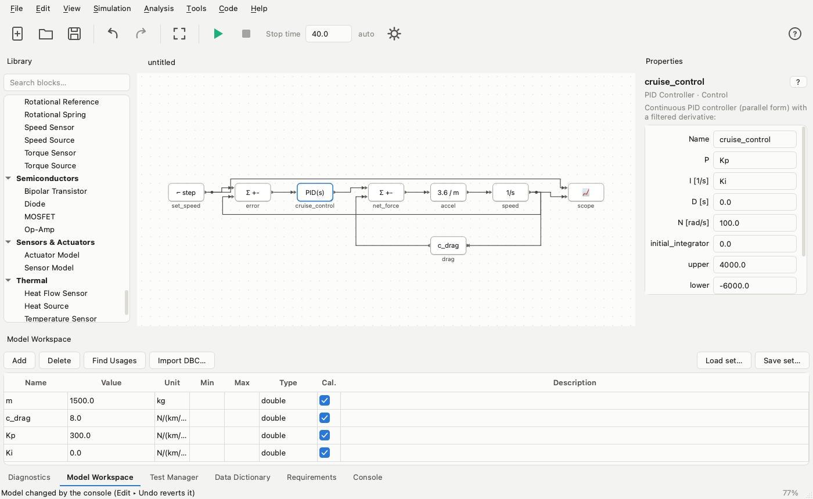
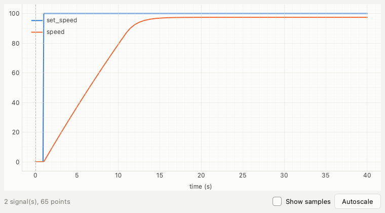
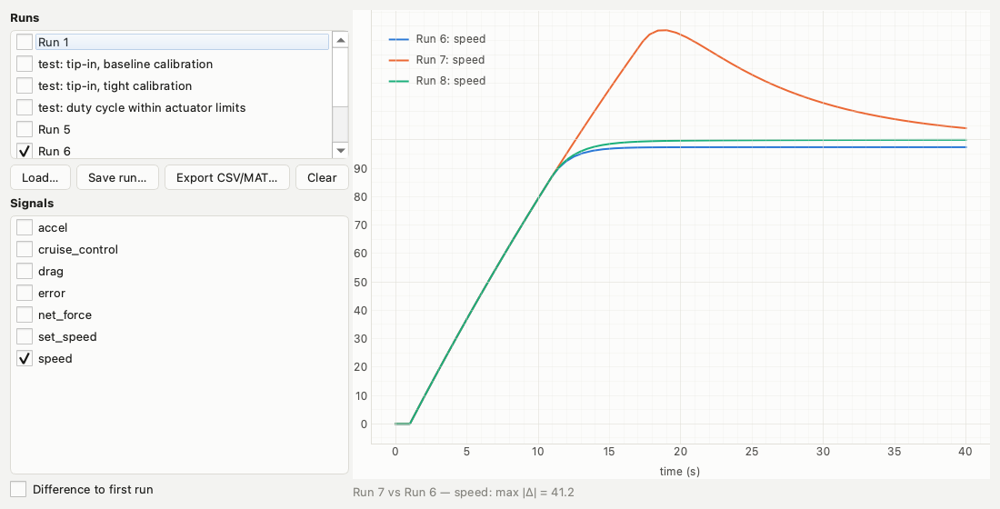

Tutorial: Your first model: a cruise control¶
| You will learn | the editor, blocks and wires, workspace variables, scopes, the Data Inspector, PI control and integrator windup |
| Before this | nothing: start here (the editor needs uv sync --extra gui) |
| Level and time | beginner, about 30 minutes |
| Follow along | build the model yourself, step by step below; the finished model is examples/cruise_control.nervus |
| Topic | Getting started (all tutorials) |
We build a cruise control: a controller that adjusts the engine force so the car holds a set speed. On the way you meet the most common effect in control engineering, integrator windup, and fix it.
The idea¶
The car accelerates with the engine force \(F\) and is slowed by the drag, which we take as proportional to the speed \(v\) (in km/h):
The controller compares the set speed with the actual speed and computes the force. In a block diagram, the equation becomes a loop: set speed → error → controller → force → car → speed → back to the error.
Step 1: start the editor and add the blocks¶
uv run nervus
You get an empty model. Add these 8 blocks. To add a block, type its name in the search box above the library (top left) and drag it onto the canvas (or double-click it in the library). Then give it the name in the table: select the block and edit Name at the top of the Properties panel (right).
| Library block | Name it | What it does |
|---|---|---|
| Step (Sources) | set_speed |
the driver sets 100 km/h at t = 1 s |
| Sum (Math Operations) | error |
set speed − speed |
| PID Controller (Control) | cruise_control |
the controller |
| Sum | net_force |
engine force − drag |
| Gain (Math Operations) | accel |
force → acceleration |
| Integrator (Continuous) | speed |
acceleration → speed |
| Gain | drag |
speed → drag force |
| Scope (Sinks) | scope |
shows the result |
Arrange them roughly like this, with drag below the main line:

Step 2: connect the blocks¶
Drag from an output port (the small arrow on the right side of a block) to an input port (left side). Make these 10 connections:
set_speed→errorinput 1, andset_speed→scopeinput 1error→cruise_control→net_forceinput 1net_force→accel→speedspeed→errorinput 2 (the feedback),speed→drag, andspeed→scopeinput 2drag→net_forceinput 2
drag points the wrong way for a feedback path: select it and press Ctrl+Shift+F (⌘⇧F on a Mac) to
flip it, so its input is on the right. The lines route themselves around the blocks:

Check your work: The Diagnostics tab at the bottom says No problems found when every input is connected. If it lists an unconnected input, click the message: the block is selected for you.
Step 3: set the parameters¶
First the model workspace: open the Model Workspace tab at the bottom, press Add four times and fill in the table (double-click a cell to edit it):
| Name | Value | Unit |
|---|---|---|
m |
1500 | kg |
c_drag |
8 | N/(km/h) |
Kp |
300 | N/(km/h) |
Ki |
0 | N/(km/h·s) |
Now select each block and set its parameters in the Properties panel. Parameters can use the workspace names, so you can tune later without touching the blocks:
| Block | Parameters |
|---|---|
set_speed |
time 1, final 100 |
error, net_force |
signs +- (the first input is added, the second subtracted) |
cruise_control |
P Kp, I Ki, upper 4000, lower -6000 (the engine's and the brakes' limits in N) |
accel |
gain 3.6 / m (the 3.6 converts m/s to km/h) |
drag |
gain c_drag |
scope |
num_inputs 2 |
Press Enter after typing a value. Click in a field (or hover over it) to see what you can write there, e.g. for
signs that +- subtracts the second input; press F1 for the block's
help page.
Finally set the Stop time in the toolbar to 40.

Step 4: run and look at the result¶
Press ▶ (or Ctrl+R), then double-click the scope:

The car accelerates at full force (the controller output is at its 4000 N limit), but it settles at 97.4 km/h, not 100. Why? At 100 km/h the drag is 800 N, and a P controller only produces force when there is an error: it needs \(800 / (300 + 8) \approx 2.6\) km/h of error to push 800 N. This steady-state error is typical of P control.
Step 5: add integral action, and meet windup¶
The integral term keeps increasing the force as long as there is any error, so it removes the steady-state
error. In the Model Workspace set Ki = 30 and run again.
Now open Simulation ▸ Data Inspector (Ctrl+I). Tick both runs and the signal speed:

Run 2 (orange) reaches 100 km/h, but only after shooting up to 139 km/h. While the car was accelerating at the 4000 N limit, the integrator kept adding up the large error ("winding up"). When the speed finally reached 100 km/h, the integrator held so much that the controller kept pushing, and it took many seconds to unwind. This is integrator windup, and it happens in every controller with an output limit: throttle, idle speed, boost pressure.
Step 6: fix it with anti-windup¶
Select cruise_control and set anti_windup to clamping: the integrator stops integrating while the
output is at its limit. Run again. Run 3 (green) reaches 100 km/h with no overshoot and settles in about
15 s.
| Run | Controller | Highest speed | After 40 s |
|---|---|---|---|
| 1 | P | 97.4 km/h | 97.4 km/h |
| 2 | PI | 138.6 km/h | 104.1 km/h |
| 3 | PI with anti-windup | 100.0 km/h | 100.0 km/h |
Step 7: save, and make it a test¶
Save with Ctrl+S (for example as cruise_control.nervus). The file is plain JSON, so it works well with
Git.
To make sure nobody breaks the controller later, add a test case: in the Test Manager tab press
Add, set the stop time to 40 and add a check bounds on speed with upper limit 101. Press Run All
(Ctrl+T): it passes now, and it fails if someone removes the anti-windup. See
Test cases.
The same in Python¶
Every model can also be built and run from Python, for scripts, sweeps and CI.
examples/cruise_control.py builds this
model and runs the three versions:
from nervus import simulate
from cruise_control import build # in examples/
for ki, aw in ((0, "none"), (30, "none"), (30, "clamping")):
res = simulate(build(ki=ki, anti_windup=aw))
print(ki, aw, res["speed"].max())
Experiments¶
Change a value in the Model Workspace, press ▶, and compare with the earlier runs in the Data Inspector.
| Try | What you will see |
|---|---|
m = 2500 (a loaded car) |
slower acceleration and a small overshoot (100.4 km/h); the controller still settles at 100 |
Kp = 1000 |
P only: the steady error shrinks to 0.8 km/h, but never disappears |
Ki = 200 with anti-windup |
a stronger integral action: the speed overshoots to 103 km/h before settling |
cruise_control upper = 2000 |
a weaker engine: it takes twice as long to get close to 100 km/h |
Next¶
Next in this topic: Reusable components with subsystems, masks and libraries. Or pick another one from the tutorial overview.